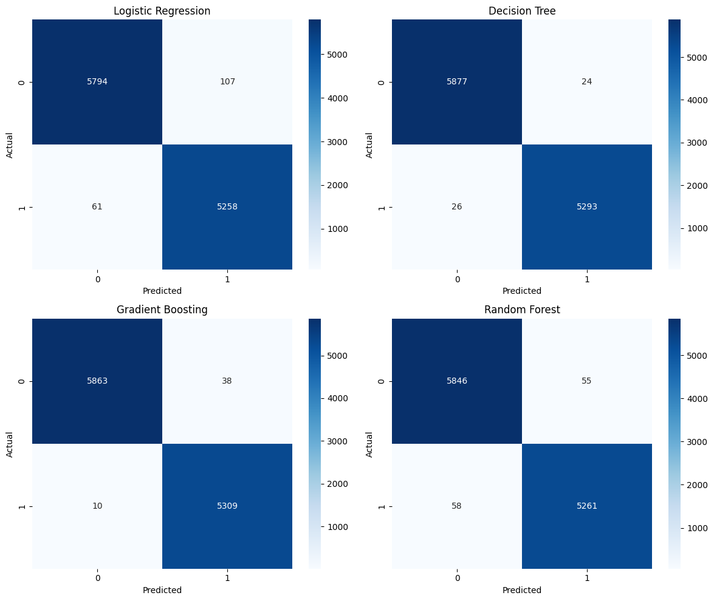
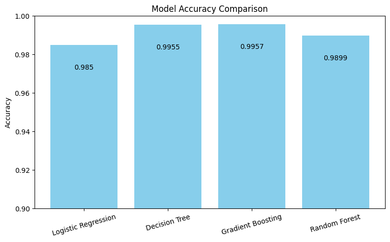

🔍 Features
- Clean and preprocess news article text
- TF-IDF feature extraction
- Train & evaluate Logistic Regression, Decision Tree, Random Forest, Gradient Boosting
- Manual testing with custom news input
- Evaluation metrics: Accuracy, Precision, Recall, F1-Score
- Visualizations: Confusion matrix, accuracy plots
🧪 Model Performance
| Model | Accuracy | Precision | Recall | F1-Score |
|---|---|---|---|---|
| Logistic Regression | 0.985 | 0.98 | 0.99 | 0.98 |
| Decision Tree | 0.9955 | 1.00 | 0.995 | 0.997 |
| Gradient Boosting | 0.9957 | 0.99 | 1.00 | 0.995 |
| Random Forest | 0.9899 | 0.99 | 0.99 | 0.99 |
📊 Visualizations
Includes confusion matrices and model accuracy comparisons.

🗃️ Dataset
Used the Fake and Real News Dataset from Kaggle containing labeled real and fake news articles.